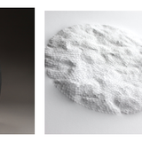

TEXTURE
Introducing the works of Anne-Charlotte Saliba, Mylinh NGuyen and Pascal Oudet
September 12 – October 29, 2023

Anne-Charlotte Salida was born in 1985 in France. As a paper sculptor, Anne-Charlotte Saliba discovered the material during her studies of applied arts in environmental design. Paper helped her to experiment with her ideas. "I wanted to work with my hands" she explains. "Paper was much more within my economic reach, offered me an incredible range of possibilities, and gave me the chance to entirely dedicate myself to this type of art craft".
Her artistic universe is largely inspired by nature, its abyssal dimension as well as its vegetal or mineral forms. Her sculpted artworks are a confrontation of smooth and grainy texture on the same linear paper. A cloud of small perforations, incisions, and punches which play on the elasticity of the paper, to create a topographic relief. A controlled wandering of dotted lines, scales and bumps are drawn following the movement of her hand on the paper. The flow is both free and thoughtfully planned, allowing unexpected movements and completely abandoning set patterns at times.
Saliba sees herself more like an artisan than an artist in the sense that she is working with texture and touch to create unique intricate sculpted artworks.
Playing with light and shadow, each in her own way ennobles a seemingly banal material with a genuine concern for ethics. Like modern-day memento mori, Saliba’s works transport us into dreamlike worlds in which the evanescence of paper echoes the transience of life, subtly reminding us to enjoy the present moment.
Anne-Charlotte Saliba works and lives near Lyon, France. Her work has reviewed in numerous publications and has won the prestigious price for Jeune Creation de Métiers d’Art in 2020. She is now represented by the Muriel Guépin Gallery in New York, USA.
TO RECEIVE A PDF WITH PRICING AND AVAILBLE WORKS PLEASE CONTACT US HERE